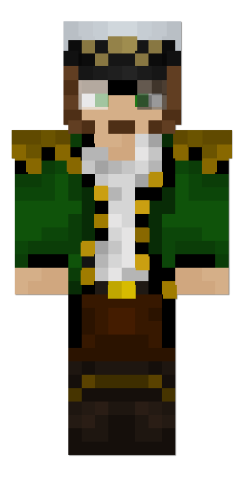
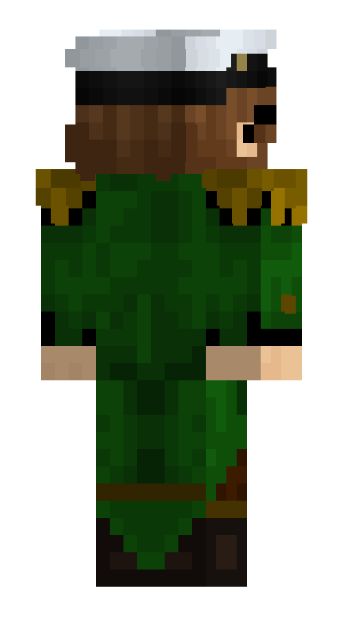

Капитан Юхав
Капитан Ю́хав — человеческий мужчина средних лет, капитан потонувшего корабля. Был выброшен на берег Острова вместе с Наутилусом, единственным выжившим членом его экипажа. Сразу после пробуждения они встретили Жёлтого кролика и принцессу Акварию.
Его цель на острове — построить новый корабль и продолжить своё путешествие. Достаточно эгоцентричный и властный, капитан Юхав хочет заправлять всем островом и использовать его жителей в своих целях. Пока довольствуется ролью правой руки принцессы Акварии.
Внешность
У Юхава немного загорелая светлая кожа, каштановые волосы и зелёные глаза. Он носит бороду и бакенбарды.На нём надета капитанская фуражка, тёмно-зелёный расстёгнутый плащ, длина которого уходит назад на золотых пуговицах и белая рубашка под ним. Плечи украшены тёмно-жёлтыми эполетами. Коричневые штаны с жёлтым низом закреплены ремнём на золотой пряжке. На ногах надеты тёмно-коричневые сапоги. Левая линза его очков разбитая и потемневшая. Капитан Юхав уверяет, что её разбили эндерксолотли, когда-то напавшие на него, и он потерял после этого глаз. На самом деле его глаз цел.
Личность
Капитан Юхав сразу создаёт впечатление коварного и изворотливого человека, в основном преследующего личную выгоду и склонного к лукавству. Он не очень приятен в общении, очевидно притворный с теми, кто ему может быть полезен или кого он боится и резко груб с другими.Он провёл в море последние 30 лет своей жизни и с тоской вспоминает свой потонувший корабль, будто ушедшую из жизни жену. С настоящими женщинами ему вести дел не приходилось и не было интересно.
Капитан Юхав питает глубокую неприязнь к любым морским народам и называет их представителей «сельдями».


Отношения
Наутилус
См. также: Наутилус#Капитан ЮхавНаутилус — боцман корабля капитана Юхава. Он больше всех заслуживает его доверия. Юхав ценит его и относится как к сыну или дочери. Первое время он мог полагаться только на Наутилуса и часто делился с ним своими планами, зная, что тот всегда их поддержит.
Принцесса Аквария
См. также: Принцесса Аквария#Капитан ЮхавПри встрече, капитан Юхав планировал использовать Принцессу в своих целях. Заметив, что при ней имеется трезубец, он решил первое время вести себя перед ней мило, но при первой возможности забрать его и наладить свою власть на Острове.
Со временем, чем больше они проводили время вместе, Юхав проникся тёплыми чувствами к Принцессе и забыл о своих коварных планах. Несмотря на свою нелюбовь к морским существам, Юхав быстро привык к Принцессе и видит в ней больше человеческого, чем рыбного. Питает к ней скорее отцовские чувства.
Первый день
В первый раз Юхав встретил принцессу Акварию на берегу, когда она подкралась к нему сзади и громко поприветствовала. Они выслушали друг друга. Принцесса попросила о защите, пока они на острове, помощи в нахождении королевства по возможности, и посочувствовала утрате Юхава.
Капитан Юхав позволял себе отпускать неприличные комментарии в сторону Принцессы, которые она не понимала в силу своей невинности. В конце дня он услышал её возраст и получил моральный урон. Он сказал, что притворится, что этого не слышал.
Второй день
Принцесса вмешалась в обмен ресурсами между ним и Жёлтым кроликом. Ему пришлось подыграть ей и поделиться добычей. Это раздражало его и ударило по эго. Он пообещал себе обязательно поставить её на место.
Третий день
Капитан был оскорблён предположением Принцессы о том, что он никогда не был настоящим капитаном, из-за того что он упомянул то, что ему не доводилось видеть подводных королевств подобных тем, что она ищет. Это задело его, он прогнал её и продолжил экспедицию с Наутилусом, указав на то, что никому нельзя доверять. Он волновался за Акварию, которая одна ушла от них, и подослал за ней Наутилуса убедиться, что она в порядке, но просил уточнить, что не извиняется. Потом Юхав вместе с Наутилусом нашли Принцессу, предложил ей забыть обиды и пойти с ними. Они помирились, как умели.
Пятый день
Вдвоём с Принцессой они отправились в небольшое путешествие за различными ресурсами. Ему была искренне приятна её компания.
Седьмой день
Капитан был удивлён способностью принцессы Акварии говорить на кроличьем языке. Возможно, сперва даже неприятно удивлён, так как она сразу опустилась до поведения глупого ребёнка, какими являются кролики. Он почувствовал себя будто среди детсадовцев. Но, со стороны наблюдая за переговорами Принцессы и Белого кролика, сам постарался заговорить с ними и поддержал Принцессу в битве против кролика.
Девятый день
Макди настроила Капитана против всех, кто принял сторону Беатрис в их с Макди конфликте. Среди таких людей была Принцесса. Ему были непонятны её расхваливающие Беатрис речи, и он достаточно резко на них отвечал. Юхав отнёсся к Принцессе с подозрением из-за её выбора.
Двенадцатый день
Принцесса попыталась унизить Юхава перед их новым знакомым, как всегда радостно и непринуждённо рассказывая о том, как он выполняет все её прихоти и бегает следом как собака. Она ещё заплатит за такую наглость?
Тето
См. также: Тето#Капитан ЮхавЮхав открыто враждует с Тето и питает неприязнь ко всей его расе эндерксолотлей. Он часто проклинает его и винит во всех бедах. То, что Тето предпочитает жить на отдельном этаже, куда не забраться никому кроме него, раздражает Юхава и заставляет его сомневаться в Тето, считая его дистанцированность подозрительной. Капитан всегда пытается пробраться к нему в комнату и даже читал его личный дневник вместе с Принцессой чтоб знать, что творится у него на уме. Капитан считает Тето странным, «фриком» и оказывающим дурное влияние на Принцессу.
Жёлтый кролик
См. также: Жёлтый кролик#Капитан ЮхавЖёлтый кролик представляет из себя источник выгоды в глазах капитана Юхава. Они часто заключают сделки и обмениваются ресурсами, иногда не без шантажа с чьей-либо стороны. Юхав активно давал ему отпор и изображал что видит в нём врага и «военного преступника» когда тот оскорбил честь Принцессы, но сам совсем не брезговал идти с ним на деловые переговоры за её спиной. Жёлтый кролик раздражает капитана Юхава, но со временем Капитан к нему немного привык.
Гоша
См. также: Гоша#Капитан ЮхавГоша приплыл на Остров именно ради капитана Юхава, являясь его преданным фанатом, что не может не радовать Капитана и не тешить его самооценку.
Макди
См. также: Макди#Капитан ЮхавМакди одновременно пугает и притягивает Капитана к себе своей природой. Чувствуя её силу, он хотел бы быть с ней ближе и иметь у себя на стороне такого союзника. Он пытается ей всячески угодить и даже строит статую мухи у дома Макди. Макди пользуется этим себе на пользу и манипулирует Капитаном, убеждая его в том, что её соперница Беатрис опасна.
Смотритель маяка
См. также: Смотритель маяка#Капитан ЮхавСумасшедший старик не на шутку напугал капитана Юхава своими рассказами о том, что он прожил на этом острове всю жизнь. Он показался Юхаву настоящим дикарём.
Ифритка
См. также: Ифритка#Капитан ЮхавИфритка досаждала Капитану с Принцессой. Он не видел смысла идти с ней на переговоры и залил вход в её дом водой. Он всё ещё относится к ней как к дикому животному и говорит при ней так, будто её здесь нет.
Шино
См. также: Шино#Капитан ЮхавШино показалась Юхаву странной и грубой. Он был против того, чтоб она селилась жить к ним, но разрешил ей остаться только потому, что этого попросила Принцесса.
Беатрис
См. также: Беатрис#Капитан ЮхавИз-за влияния Макди Юхав сразу был настроен против Беатрис, даже не встретив её лично. Он быстро привык к её компании, когда она оказалась не таким плохим человеком.
Заметки
- Имя Юхава произошло от имени капитана Ахава из романа «Моби Дик» Г. Мелвилла.